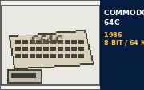

|
Macintosh | Windows | Amiga | C64 / 8-Bit | Atari | DOS | G15Control | Labs |
| HOME | PROJECTS | PLATFORMS | DOWNLOADS | COMPATIBILITY | BROWSER TEST | ROADMAP | ABOUT |
| Deutsch | English |
| Commodore 64C | |
 |
The Commodore 64C arrived in 1986 as a redesigned version of the successful C64. Its light, lower-profile case visually matched the C128 and Amiga era, while software compatibility with the classic C64 was largely retained. For MultiEra Labs it is our real 8-bit platform. |
| TECHNICAL DATA | ||||||||||||||||||
|
| PERIOD CONFIGURATIONS |
| Depending on board revision, C64C systems can use the classic 6510 or the later 8500. VIC-II and SID revisions also vary between board revisions and PAL/NTSC models. The core platform remains the same: 64 KB RAM, BASIC V2.0 and strong software compatibility with the C64. |
|
|
| NOTES: The C64C is primarily a case and board redesign; the C64 software platform remained largely compatible. |
|
Home |
Projects |
Platforms |
Downloads |
Compatibility |
Browser Test |
Roadmap |
About
Legal notice | Privacy | Contact MultiEra Labs - Software across generations. Best viewed at 640x480 or 800x600. HTML 4.01 Transitional - No JavaScript required. Deutsche Version | Last updated: 04-Oct-2026 |